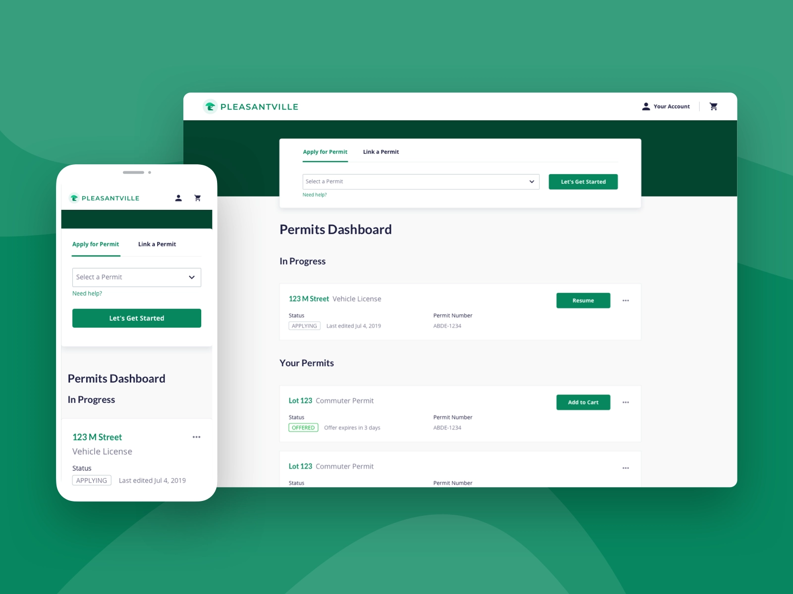
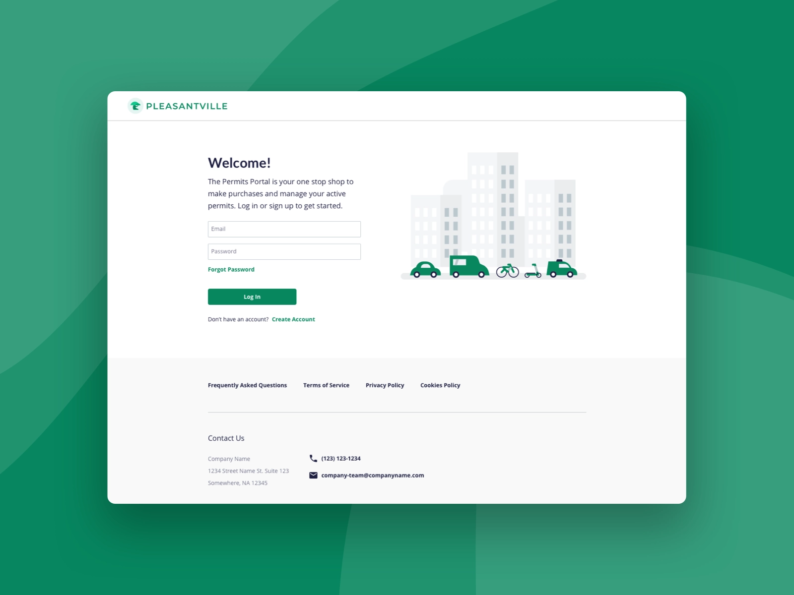
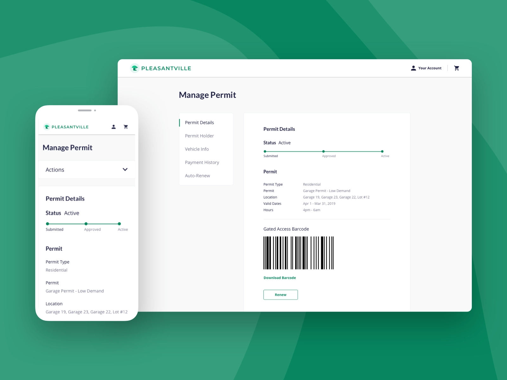
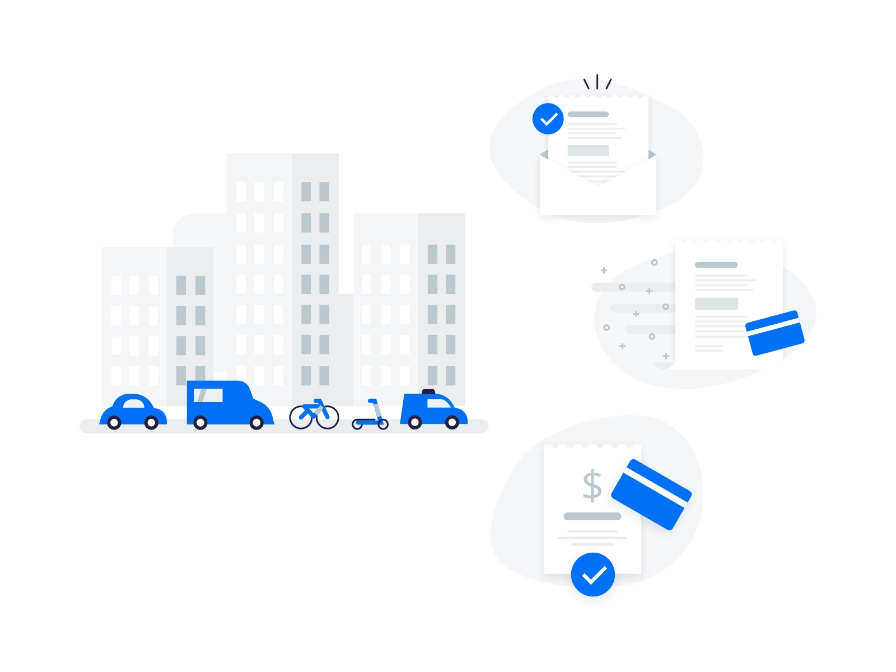
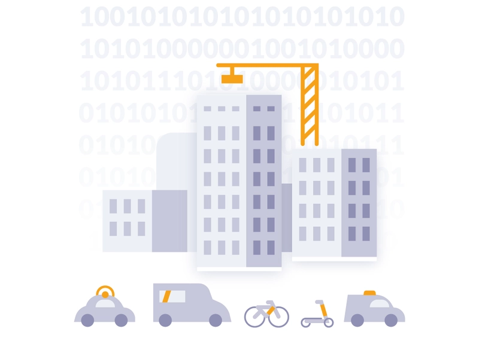
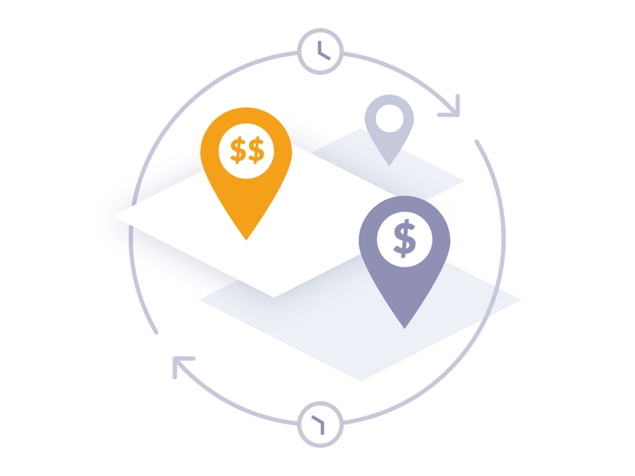
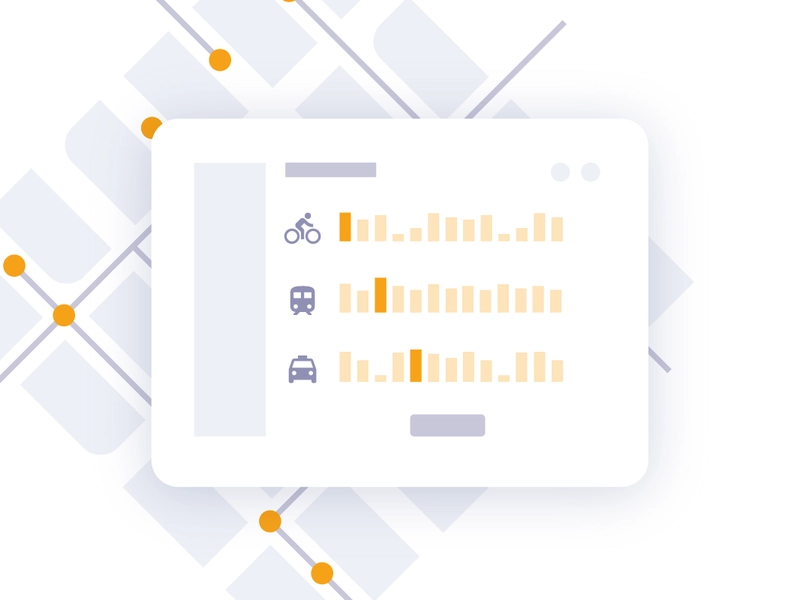

Product Design · Enterprise · 2018 — 2020
Designing mobility
at urban scale

Overview
An end-to-end platform for urban mobility
Passport is an end-to-end digital platform for managing mobile pay parking, digital enforcement and permitting, and mobility management. While there, I helped launch the second version of the customer portal, facilitated cross-discipline design workshops, and conducted user interviews and research to help the team align with our customers' needs.
I also contributed to the Passport Design System and helped encourage its adoption across the company — ensuring a consistent, scalable visual language across a wide range of product surfaces.
Process
Cross-discipline design at enterprise scale
Passport serves two very different audiences — the drivers using consumer apps to pay for parking, and the city administrators and enforcement officers managing it all behind the scenes. Both required careful, research-informed design thinking.
01
Customer Portal v2
Led the design and launch of the second version of the customer portal — a major product milestone that improved clarity and usability for city clients.
02
Research & Workshops
Facilitated cross-discipline design workshops and ran user interviews to surface pain points, align teams around customer needs, and reduce assumptions.
03
Design System
Contributed to the Passport Design System and drove its adoption across the company — creating shared components, patterns, and documentation.





